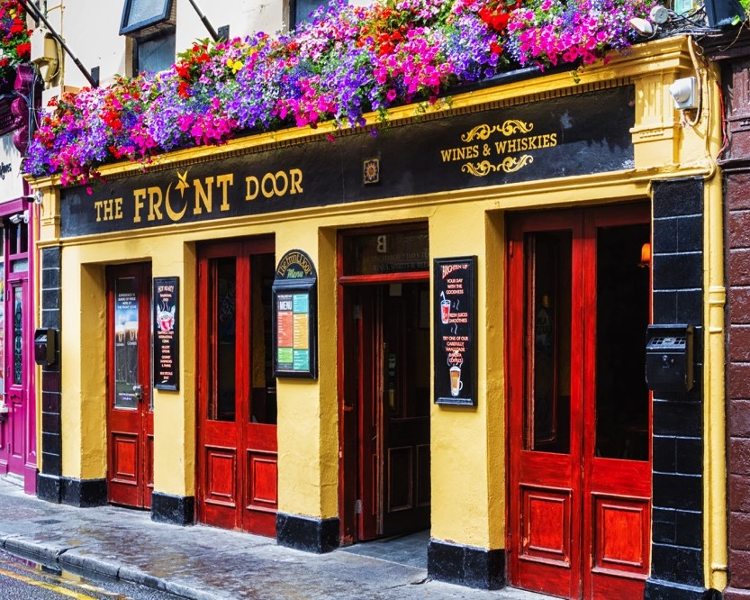

Night Life
See below to read about Galways night life and pub options
Where to go?

Night life around Galway is booming with loads of options, and there are endless pubs to choose from as well as kareoke nights, gigs, pub quizzes and other fun activities to get involved in.
The most popular pubs for students in Galway is either The Front Door or Busker Brownes. They are both located just off Shop Street.
Check them out!
Here is a link to what we consider the top pubs in Galway for students, and don't worry, it may take an individual trip to all these pubs to eventually settle on which one suits you and your friends best: Galway Pubs